Spring5_JdbcTenmplate+事务,部分新功能
JdbcTemplate( 概念和准备 )
1 、什么是 JdbcTemplate
2 、准备工作
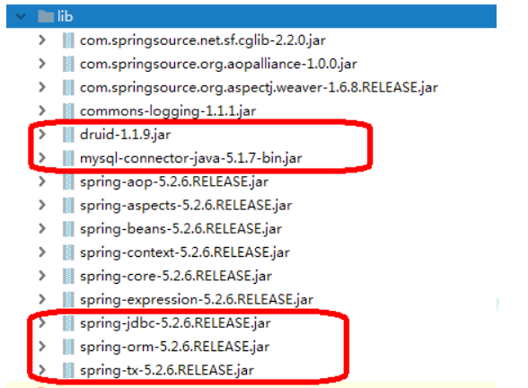
（ 2 ）在spring配置文件配置数据库连接池
1 2 3 4 5 6 <bean id ="dataSource" class ="com.alibaba.druid.pool.DruidDataSource" destroy-method ="close" > <property name ="url" value ="jdbc:mysql:///user_db" /> <property name ="username" value ="root" /> <property name ="password" value ="root" /> <property name ="driverClassName" value ="com.mysql.jdbc.Driver" /> </bean >
（ 3 ）配置JdbcTemplate对象，注入DataSource
1 2 3 4 5 <bean id ="jdbcTemplate" class ="org.springframework.jdbc.core.JdbcTemplate" > <property name ="dataSource" ref ="dataSource" > </property > </bean >
（ 4 ）创建service类，创建dao类，在dao注入jdbcTemplate对象
1 2 <context:component-scan base-package ="com.atguigu" > </context:component-scan >
1 2 3 4 5 6 @Service public class BookService @Autowired private BookDao bookDao;}
1 2 3 4 5 6 @Repository public class BookDaoImpl implements BookDao @Autowired private JdbcTemplate jdbcTemplate;}
JdbcTemplate 操作数据库（添加）
1 、对应数据库创建实体类
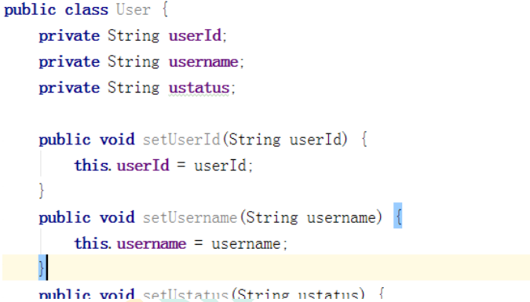
2 、编写 service 和 dao
有两个参数
第一个参数：sql语句
第二个参数：可变参数，设置sql语句值
1 2 3 4 5 6 7 8 9 10 11 12 13 14 15 16 17 18 @Repository public class BookDaoImpl implements BookDao @Autowired private JdbcTemplate jdbcTemplate;@Override public void add (Book book) String sql = "insert into t_book values(?,?,?)" ; Object[] args = {book.getUserId(), book.getUsername(), book.getUstatus()}; int update = jdbcTemplate.update(sql,args);System.out.println(update); } }
3 、测试类
1 2 3 4 5 6 7 8 9 10 11 12 @Test public void testJdbcTemplate () ApplicationContext context = new ClassPathXmlApplicationContext("bean1.xml" );BookService bookService = context.getBean("bookService" , BookService.class); Book book = new Book(); book.setUserId("1" ); book.setUsername("java" ); book.setUstatus("a" ); bookService.addBook(book); }
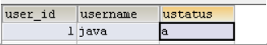
JdbcTemplate 操作数据库（修改和删除）
1 、修改
1 2 3 4 5 6 7 @Override public void updateBook (Book book) String sql = "update t_book set username=?,ustatus=? where user_id=?" ; Object[] args = {book.getUsername(), book.getUstatus(),book.getUserId()}; int update = jdbcTemplate.update(sql, args);System.out.println(update); }
2 、删除
1 2 3 4 5 6 @Override public void delete (String id) String sql = "delete from t_book where user_id=?" ; int update = jdbcTemplate.update(sql, id);System.out.println(update); }
JdbcTemplate 操作数据库（查询返回某个值）
1 、查询表里面有多少条记录，返回是某个值2 、使用 JdbcTemplate 实现查询返回某个值代码
有两个参数
第一个参数：sql语句
第二个参数：返回类型Class
1 2 3 4 5 6 7 8 @Override public int selectCount () String sql = "select count(*) from t_book" ; Integer count = jdbcTemplate.queryForObject(sql, Integer.class); return count;}
JdbcTemplate 操作数据库（查询返回对象）
1 、场景：查询图书详情2 、 JdbcTemplate 实现查询返回对象
有三个参数
第一个参数：sql语句
第二个参数：RowMapper 是接口，针对返回不同类型数据，使用这个接口里面实现类完成
第三个参数：sql语句值
1 2 3 4 5 6 7 8 9 @Override public Book findBookInfo (String id) String sql = "select * from t_book where user_id=?" ; Book book = jdbcTemplate.queryForObject(sql, new BeanPropertyRowMapper(Book.class), id); return book;}
JdbcTemplate 操作数据库（查询返回集合）
1 、场景：查询图书列表分页 …
2 、调用 JdbcTemplate 方法实现查询返回集合
有三个参数
第一个参数：sql语句
第二个参数：RowMapper 是接口，针对返回不同类型数据，使用这个接口里面实现类完成
第三个参数：sql语句值
1 2 3 4 5 6 7 8 9 @Override public List findAllBook () String sql = "select * from t_book" ; List bookList = jdbcTemplate.query(sql, new BeanPropertyRowMapper(Book.class)); return bookList;}
JdbcTemplate 操作数据库（批量操作）
1 、批量操作：操作表里面多条记录
2 、 JdbcTemplate 实现批量添加操作
有两个参数
第一个参数：sql语句
第二个参数：List集合，添加多条记录数据
1 2 3 4 5 6 7 8 9 10 11 12 13 14 15 16 17 @Override public void batchAddBook (List<Object[]> batchArgs) String sql = "insert into t_book values(?,?,?)" ; int [] ints = jdbcTemplate.batchUpdate(sql, batchArgs);System.out.println(Arrays.toString(ints)); } List<Object[]> batchArgs = new ArrayList<>(); Object[] o1 = {"3" ,"java" ,"a" }; Object[] o2 = {"4" ,"c++" ,"b" }; Object[] o3 = {"5" ,"MySQL" ,"c" }; batchArgs.add(o1); batchArgs.add(o2); batchArgs.add(o3); bookService.batchAdd(batchArgs);
3 、 JdbcTemplate 实现批量修改操作
1 2 3 4 5 6 7 8 9 10 11 12 13 14 15 16 17 @Override public void batchUpdateBook (List<Object[]> batchArgs) String sql = "update t_book set username=?,ustatus=? where user_id=?" ; int [] ints = jdbcTemplate.batchUpdate(sql, batchArgs);System.out.println(Arrays.toString(ints)); } List<Object[]> batchArgs = new ArrayList<>(); Object[] o1 = {"java0909" ,"a3" ,"3" }; Object[] o2 = {"c++1010" ,"b4" ,"4" }; Object[] o3 = {"MySQL1111" ,"c5" ,"5" }; batchArgs.add(o1); batchArgs.add(o2); batchArgs.add(o3); bookService.batchUpdate(batchArgs);
4 、 JdbcTemplate 实现批量删除操作
1 2 3 4 5 6 7 8 9 10 11 12 13 14 15 16 @Override public void batchDeleteBook (List<Object[]> batchArgs) String sql = "delete from t_book where user_id=?" ; int [] ints = jdbcTemplate.batchUpdate(sql, batchArgs);System.out.println(Arrays.toString(ints)); } List<Object[]> batchArgs = new ArrayList<>(); Object[] o1 = {"3" }; Object[] o2 = {"4" }; batchArgs.add(o1); batchArgs.add(o2); bookService.batchDelete(batchArgs);
事务操作（事务概念）
1 、什么事务
lucy 转账 100 元 给mary
lucy少 100 ，mary多 100
2 、事务四个特性（ ACID ）
事务操作（搭建事务操作环境）
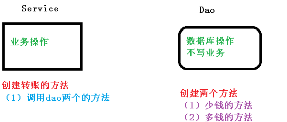
1 、创建数据库表，添加记录
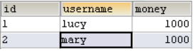
2 、创建 service ，搭建 dao ，完成对象创建和注入关系
1 2 3 4 5 6 7 8 9 10 11 12 @Service public class UserService @Autowired private UserDao userDao;} @Repository public class UserDaoImpl implements UserDao @Autowired private JdbcTemplate jdbcTemplate;}
3 、在 dao 创建两个方法：多钱和少钱的方法，在 service 创建方法（转账的方法）
1 2 3 4 5 6 7 8 9 10 11 12 13 14 15 16 17 18 19 20 21 22 23 24 25 26 27 28 29 30 31 32 33 34 35 36 37 @Repository public class UserDaoImpl implements UserDao @Autowired private JdbcTemplate jdbcTemplate;@Override public void reduceMoney () String sql = "update t_account set money=money-? where username=?" ; jdbcTemplate.update(sql, 100 ,"lucy" ); } @Override public void addMoney () String sql = "update t_account set money=money+? where username=?" ; jdbcTemplate.update(sql, 100 ,"mary" ); } } @Service public class UserService @Autowired private UserDao userDao;public void accountMoney () userDao.reduceMoney(); userDao.addMoney(); } }
4 、上面代码，如果正常执行没有问题的，但是如果代码执行过程中出现异常，有问题
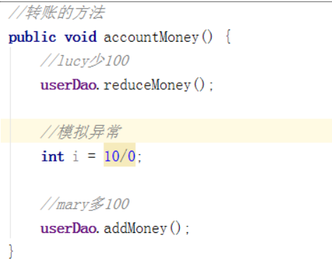
（ 1 ）上面问题如何解决呢？
（ 2 ）事务操作过程
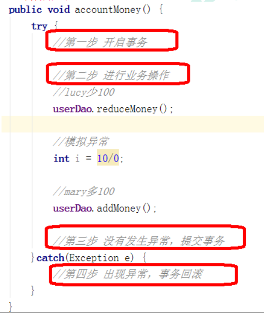
事务操作（ Spring 事务管理介绍）
1 、事务添加到 JavaEE 三层结构里面 Service 层（业务逻辑层）
2 、在 Spring 进行事务管理操作1 ）有两种方式：编程式事务管理和声明式事务管理（使用）
3 、声明式事务管理1 ）基于注解方式（使用）
4 、在 Spring 进行声明式事务管理，底层使用 AOP 原理
5 、 Spring 事务管理 API
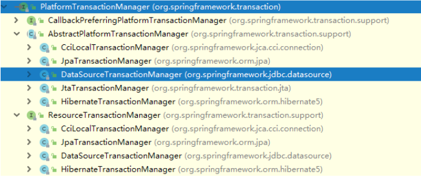
事务操作（注解声明式事务管理）
1 、在 spring 配置文件配置事务管理器
1 2 3 4 <bean id ="transactionManager" class ="org.springframework.jdbc.datasource.DataSourceTransactionManager" > <property name ="dataSource" ref ="dataSource" > </property > </bean >
2 、在 spring 配置文件，开启事务注解
1 2 3 4 5 6 7 8 9 10 11 12 13 14 <beans xmlns ="http://www.springframework.org/schema/beans" xmlns:xsi ="http://www.w3.org/2001/XMLSchema-instance" xmlns:context ="http://www.springframework.org/schema/context" xmlns:aop ="http://www.springframework.org/schema/aop" xmlns:tx ="http://www.springframework.org/schema/tx" xsi:schemaLocation ="http://www.springframework.org/schema/beans http://www.springframework.org/schema/beans/spring-beans.xsd http://www.springframework.org/schema/context http://www.springframework.org/schema/context/spring-context.xsd http://www.springframework.org/schema/aop http://www.springframework.org/schema/aop/spring-aop.xsd http://www.springframework.org/schema/tx http://www.springframework.org/schema/tx/spring-tx.xsd" %3E
（ 2 ）开启事务注解
1 2 <tx:annotation-driven transaction-manager ="transactionManager" > </tx:annotation-driven >
3 、在 service 类上面（或者 service 类里面方法上面）添加事务注解
1 2 3 @Service @Transactional public class UserService
事务操作（声明式事务管理参数配置）
1 、在 service 类上面添加注解 @Transactional ，在这个注解里面可以配置事务相关参数
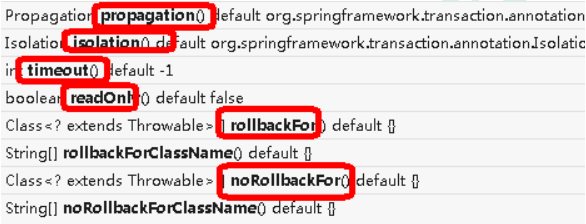
2 、 propagation ：事务传播行为1 ）多事务方法直接进行调用，这个过程中事务 是如何进行管理的
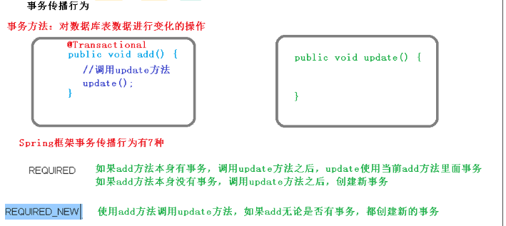
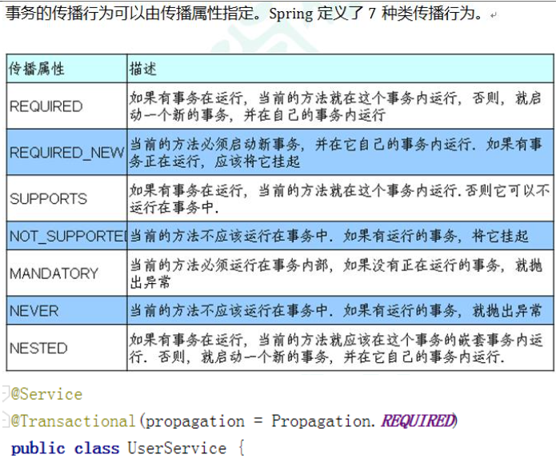
3 、 ioslation ：事务隔离级别
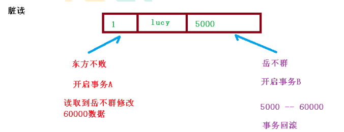
（ 4 ）不可重复读：一个未提交事务读取到另一提交事务修改数据
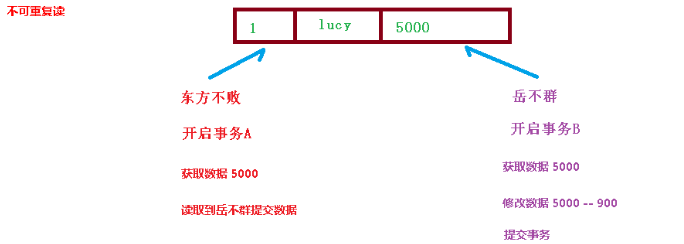
（ 5 ）虚读：一个未提交事务读取到另一提交事务添加数据
（ 6 ）解决：通过设置事务隔离级别，解决读问题
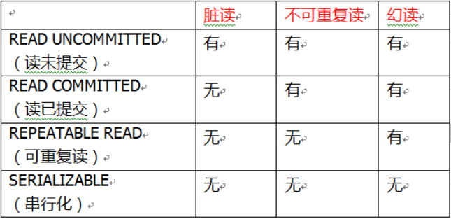
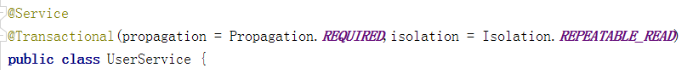
4 、 timeout ：超时时间
5 、 readOnly ：是否只读
6 、 rollbackFor ：回滚
7 、 noRollbackFor ：不回滚
事务操作（ XML 声明式事务管理）
1 、在 spring 配置文件中进行配置
第三步 配置切入点和切面
1 2 3 4 5 6 7 8 9 10 11 12 13 14 15 16 17 18 19 20 <bean id ="transactionManager" class ="org.springframework.jdbc.datasource.DataSourceTransactionManager" > <property name ="dataSource" ref ="dataSource" > </property > </bean > <tx:advice id ="txadvice" > <tx:attributes > <tx:method name ="accountMoney" propagation ="REQUIRED" /> </tx:attributes > </tx:advice > <aop:config > <aop:pointcut id ="pt" expression ="execution(* com.atguigu.spring5.service.UserService.*(..))" /> <aop:advisor advice-ref ="txadvice" pointcut-ref ="pt" /> </aop:config >
事务操作（完全注解声明式事务管理）
1 、创建配置类，使用配置类替代 xml 配置文件
1 2 3 4 5 6 7 8 9 10 11 12 13 14 15 16 17 18 19 20 21 22 23 24 25 26 27 28 29 30 31 32 33 34 @Configuration @ComponentScan(basePackages = "com.atguigu") @EnableTransactionManagement public class TxConfig @Bean public DruidDataSource getDruidDataSource () DruidDataSource dataSource = new DruidDataSource(); dataSource.setDriverClassName("com.mysql.jdbc.Driver" ); dataSource.setUrl("jdbc:mysql:///user_db" ); dataSource.setUsername("root" ); dataSource.setPassword("root" ); return dataSource;} @Bean public JdbcTemplate getJdbcTemplate (DataSource dataSource) JdbcTemplate jdbcTemplate = new JdbcTemplate(); jdbcTemplate.setDataSource(dataSource); return jdbcTemplate;} @Bean public DataSourceTransactionManagergetDataSourceTransactionManager(DataSource dataSource) { DataSourceTransactionManager transactionManager = new DataSourceTransactionManager(); transactionManager.setDataSource(dataSource); return transactionManager;} }
Spring5 框架新功能
1 、整个 Spring5 框架的代码基于 Java8 ，运行时兼容 JDK9 ，许多不建议使用的类和方
2 、Spring 5.0框架自带了通用的日志封装
第二步 创建log4j2.xml配置文件
1 2 3 4 5 6 7 8 9 10 11 12 13 14 15 16 17 <?xml version="1.0" encoding="UTF-8"?> <configuration status ="INFO" > <appenders > <console name ="Console" target ="SYSTEM_OUT" > <PatternLayout pattern ="%d{yyyy-MM-dd HH:mm:ss.SSS} [%t] %-5level %logger{36} -%msg%n" /> </console > </appenders > <loggers > <root level ="info" > <appender-ref ref ="Console" /> </root >
3 、 Spring5 框架核心容器支持 @Nullable 注解
（ 2 ）注解用在方法上面，方法返回值可以为空
（ 3 ）注解使用在方法参数里面，方法参数可以为空
（ 4 ）注解使用在属性上面，属性值可以为空
4 、 Spring5 核心容器支持函数式风格 GenericApplicationContext
1 2 3 4 5 6 7 8 9 10 11 12 @Test public void testGenericApplicationContext () GenericApplicationContext context = new GenericApplicationContext(); context.refresh(); context.registerBean("user1" ,User.class,() -> new User()); User user = (User)context.getBean("user1" ); System.out.println(user); }
5 、 Spring5 支持整合 JUnit5
第二步 创建测试类，使用注解方式完成
1 2 3 4 5 6 7 8 9 10 11 @RunWith(SpringJUnit4ClassRunner.class) @ContextConfiguration("classpath:bean1.xml") public class JTest4 @Autowired private UserService userService;@Test public void test1 () userService.accountMoney(); } }
（ 2 ）Spring5整合JUnit5
第二步 创建测试类，使用注解完成
1 2 3 4 5 6 7 8 9 10 @ExtendWith(SpringExtension.class) @ContextConfiguration("classpath:bean1.xml") public class JTest5 @Autowired private UserService userService;@Test public void test1 () userService.accountMoney(); } }
（ 3 ）使用一个复合注解替代上面两个注解完成整合
1 2 3 4 5 6 7 8 9 @SpringJUnitConfig(locations = "classpath:bean1.xml") public class JTest5 @Autowired private UserService userService;@Test public void test1 () userService.accountMoney(); } }
如果您喜欢此博客或发现它对您有用，则欢迎对此发表评论。 也欢迎您共享此博客，以便更多人可以参与。 如果博客中使用的图像侵犯了您的版权，请与作者联系以将其删除。 谢谢 ！